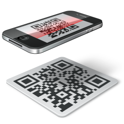

Cílem projektu je vytvoření webové aplikace zaměřené na platby správních poplatků pomocí QR kódu.

Proč by měl projekt Kešpointka.cz vzniknout ?
Protože se jedná o novodobý a rychlý způsob platby správních poplatků, který je zároveň šetrnější vůči životnímu prostředí více, než jiné (běžně) využívané způsoby platby.
Kdo je cílová skupina projektu ?
v první řadě občan, obec, město nebo jakýkoliv samosprávný celek, kterému není lhostejné, že po nás budou jiné, digitalní generace a čím dříve přestaneme zbytečně tisknout složenky, tím lépe se budou další generace mít
v druhé řadě vláda
Jaká je hlavní výhoda pro občana ?
pro občana je nesporným přínosem možnost uhrazení platby kdykoliv a kdekoliv (tzv.režim 24/7)
platbu vždy jednoznačně dohledat na účtu
aktivně se podílet na zlepšení životního prostředí
podpořit jiné veřejně-prospěšné projekty, tím že se sníží výdaje obce
nastavit si připomínku pro příští platbu
Jaká je hlavní výhoda pro obec/město nebo jakýkoliv samosprávný celek?
pro město/obec platba bez dalších poplatků (např. bez provizí VisaCard)
spatřujeme ojedinělou výhodu v příchozí platbě pod jednoduše identifikovatelným variabilním symbolem všech nezbytných poplatků a nedochází k navýšení poplatků za využívání platebních brán.
výrazně ušetřit v rozpočtu za plnění poplatkových povinností (např.jedna účetní může mít mnohem více obcí)
alokovat dostupné a kvalifikované lidské zdroje s praxí ve veřejné zprávě například do oblastí pro zpracovávání dotačních titulu EU a tím zvýšit šance pro kvalitní zpracování žádostí.
z nově vzniklých finančních zdrojů financovat jiné projekty (např. možnost další digitalizace a její zpřístupnění občanům)
motivovat občany k využívání již dostupných datových schránek nebo a tím vytvářet další úspory v nákladech (např.přestat odesílat všechny listiny poštou, kdy jeden doporučený dopis může stát až 65 CZK)
v neposlední řadě se aktivně podílet na politice životního prostředí a mnoho dalšího
Jak chcete postupovat ?
obrnit se trpělivostí, protože nejsme ty nejlepší studentky
koupily jsme si doménu Kešpointka.cz
navrhly jsme si mind mapu, která má základní logiku projektu
rády bychom dokončily
nedělat věci složitě, držet se zadání a postupně obalovat kostru
dotáhnout dle našich možností věci, co nás "pálí" z testování prototypu
všechno kvalitně a pravidelně prodiskutovat s našim mentorem Michalem Onderkou
psát si poznámky, abychom se nevracely v myšlenkách a věděly, proč postupujeme jak postupujeme
domluvit si pilotní testování v reálných podmínkách
projekt se pilotně připravuje pro obec Chýnov a pokud se osvědčí, tak bychom rády rozšířily aplikaci o další obce nebo města